Nous réexaminons ici le récit de l'observation d'un phénomène aérien non identifié qui aurait barré la route à une ambulance transportant une femme enceinte vers un hôpital de Sztum, en Pologne. L'incident s'est produit le et a été publié dans la presse locale ainsi que dans une revue ovni réputée. L'examen des détails du récit avec des outils modernes et un esprit critique a révélé que le phénomène observé était la Lune à son coucher. Le récit contient tous les éléments typiques de ce genre de méprises, notamment : l'illusion lunaire (fausse impression que la Lune est plus grosse quand elle est proche de l'horizon), l'effet de parallaxe (fausse impression d'être suivi par un objet lointain quasi immobile), ainsi que des erreurs grossières dans l'estimation de la taille, de la distance et de l'altitude.
Le sous-titre de cet article (« Le dilemme d'un médecin ») est emprunté à une légende qui accompagnait le dessin de
couverture du numéro de de la revue britannique Flying Saucer Review Popik, Emma: “Under Intelligent Control? When a UFO
‘paced’ an ambulance in Northern Poland — and obstructed the road,” Flying Saucer Review, Vol. 26, No. 6,
pp. 2-4, une publication longtemps considérée comme la principale revue ovni du monde. Le dessin, reproduit
ici en figure 1, est la représentation par un artiste d'un incident ovni détaillé dans un article des pages 2 à 4 de
la revue. L'auteur de l'article est la célèbre ufologue polonaise, par ailleurs
écrivaine de science-fiction et de fantasy, Emma Popik.Née en
à Skępe, Emma Popik est diplômée de
philologie polonaise de l'université de Gdańsk. En , après un long séjour à
Londres, elle revient en Pologne et devient rédactrice en chef fondatrice de Nowy Kurier Nadbałtycki, un mensuel consacré aux établissements d'enseignement de Gdańsk. Une liste de publications choisies de Popik peut être
consultée sur : http://www.emmaPopik.pl/index.php?title=Strona_g%C5%82%C3%B3wna
(tous les sites web consultés le ). Le récit de Popik décrit une
rencontre effrayante entre les occupants d'une ambulance et un objet non identifié planant à quelques centimètres
au-dessus d'une route
près d'un passage à niveau dans le nord de la Pologne. Les faits marquants de l'incident
sont donnés ci-dessous, cités directement de la contribution de Mme Popik à FSR.
Le , à , le téléphone sonna au service des urgences de l'hôpital de Sztum. Une ambulance partit rapidement en réponse à l'appel. Sa destination : le village de Zulawka, où attendait une parturiente, Mme Elzbieta Pluta, 25 ans. À bord de l'ambulance se trouvaient la doctoresse Barbara Piazza, Grzegorz Skoczynski le chauffeur, et le brancardier Andrzei Olejuik… Vers , ils étaient sur le chemin du retour vers [l']hôpital. Elzbieta Pluta était bien installée, assise, pas allongée, ce qui signifiait qu'il restait encore un peu de temps. Elle avait des contractions toutes les dix minutes.
Soudain, la doctoresse Piazza remarqua une grosse boule rouge dans le ciel, à une certaine distance d'eux. Elle demanda :
Qu'est-ce que ça pourrait être ?… À ce moment-là, il était environ , et l'ambulance se trouvait près du village de Tropy. La boule rouge était bien visible. En effet, alors qu'ils traversaient Tropy, l'objet paraissait aussi grand que la Lune, d'une couleur cramoisi foncé, et se rapprochait sans cesse. Le chauffeur pouvait aussi le voir lorsqu'il parvenait à y jeter de brefs coups d'œil, et ils devinrent tous très intéressés quand la boule s'approcha à une distance mesurable, environ 500 mètres, et se déplaça selon une trajectoire oblique par rapport à la route, du nord-est au sud-ouest, au-dessus de collines en pente douce. Elle ne semblait pas être à une grande hauteur, l'angle d'élévation étant compris entre 15° et 20°.Barbara Piazza déclara quelques jours plus tard :
J'ai toujours eu conscience qu'elle n'était jamais vraiment dans le ciel ; elle n'était à aucun moment très haut au-dessus du sol.Bientôt la boule fut à hauteur de la cime des arbres et à une distance d'environ 200 mètres de l'ambulance. Tous les passagers l'observaient en silence.
Vers , la Lune avait décru [s'était couchée ? — NdlR FSR] et la boule passait devant les arbres en décrivant de douces courbes tandis qu'ils laissaient derrière eux le village de Kalwa. La boule se trouvait alors à environ 150 mètres à gauche de l'ambulance.
Voulant soudain échapper à l'objet, le chauffeur accéléra. Qu'il roule à 130 km/h ou à 90 km/h, c'était exactement comme si la boule leur était reliée par une corde ; elle ne changeait jamais de distance par rapport à eux. Plus tard, alors que j'interrogeais la doctoresse, elle me dit :
Il me semblait évident que cet objet était sous contrôle intelligent. Nous ne pouvions tout simplement pas le semer. Il nous suivait à la trace !Bientôt l'ambulance approcha du passage à niveau entre Kalwa et Sztum. Le chauffeur continua quelques mètres, puis s'arrêta : la boule rouge était soudain apparue à environ 200 mètres, ou moins, devant eux sur la route. Ils ne l'avaient pas vue filer devant eux, mais elle s'arrêta… entre deux arbres. La chaussée fait 6 mètres de large à cet endroit, mais les bords de l'ovni dépassaient de la route de chaque côté, entre les arbres, d'environ 50 cm.
La surface de l'ovni présentait des bandes et des rayures courbes, avec beaucoup de lignes noires montant et descendant irrégulièrement dans tous les sens. L'un des témoins oculaires compara ces marques nettes à des veines à l'intérieur d'un corps humain, tandis qu'un autre les compara à un filet. Seule la doctoresse ne pouvait pas voir les veines, car elle est myope et porte des lunettes. Mais elle pouvait voir que certaines parties de la surface changeaient de couleur. Des taches jaune orangé semblaient apparaître sur sa surface cramoisi foncé, et tous les quatre purent le voir. La doctoresse Piazza évoqua la possibilité d'un rayonnement, et elle demanda au chauffeur d'éloigner le véhicule derrière le passage à niveau ; une fois cela fait, elle examina sa patiente, qu'elle trouva en assez bon état, mais sans beaucoup de temps devant elle.
J'avais vu la boule, déclara Mme Elzbieta Pluta quand je lui parlai plus tard,et j'avais aussi remarqué les « veines », mais je n'ai pas prêté beaucoup d'attention à la chose. Que les ovnis restent des ovnis, pensais-je ; mon problème était de ne pas accoucher dans une ambulance, car j'avais alors des contractions toutes les cinq minutes.La doctoresse Piazza sortit de l'ambulance et s'approcha de la maison où deux gardes-barrières étaient de service. Il s'agissait de Józefa Kamińska et de Gabriela Ludorf, qui étaient penchées à la fenêtre.
Vous voyez ce que je vois ?demanda la doctoresse.
Nous la regardions depuis un moment, répondit l'une d'elles.
On peut leur demander ce qu'on veut, intervint le chauffeur, Skoczynski,les filles tremblent de peur.
De retour à l'ambulance, la doctoresse prit le radiotéléphone et contacta la police :
Il y a un obstacle sur notre route, signala-t-elle.Venez, s'il vous plaît.
Quel obstacle ?
Un ovni.
…
L'objet planait à quelques centimètres au-dessus de la route, changeant sans cesse de couleur, devenant plus brillant, puis moins brillant, mais toujours avec un aspect mat. Soudain, il se déplaça lentement vers la droite et s'arrêta derrière l'arbre. Sa lumière jaunâtre brillait à travers les feuilles ; l'espace d'un instant, l'arbre sembla en feu. L'objet monta ensuite la petite colline, plana au sommet, puis revint au bout de quelques secondes. Les observateurs pouvaient voir une forte lumière blanche sous la boule, et cette lumière s'étendait à gauche et à droite. Il semblait y avoir un flot de lumière blanche au-delà de l'horizon, mais, dit la doctoresse,sans aucun doute l'horizon était derrière l'objet.
…
Minute après minute, la doctoresse vérifiait l'heure à cause de sa patiente. La situation était désormais urgente, et elle rappela le poste de police.Pendant ce temps, l'objet reprenait sa couleur d'origine. Les taches orange disparurent, et le tout redevint cramoisi foncé.
La doctoresse regarda sa patiente et sut qu'ils ne pouvaient plus attendre. Ses pensées s'emballèrent… il comprendrait sûrement que nous n'avons pas le temps si nous lui faisons un signal ? Elle se tourna vers le chauffeur :
Faites un appel de phares, dit-elle, et il le fit, deux fois. Alors, une seconde ils voyaient l'ovni cramoisi tandis qu'ils commençaient à avancer, la seconde suivante il disparut…comme un téléviseur qu'on éteint.Il était alors environ , et 10 minutes plus tard l'ambulance est à l'hôpital. À , Mme Elzbieta Pluta donna naissance à une fille, Aneta, 2 600 grammes, son quatrième enfant.
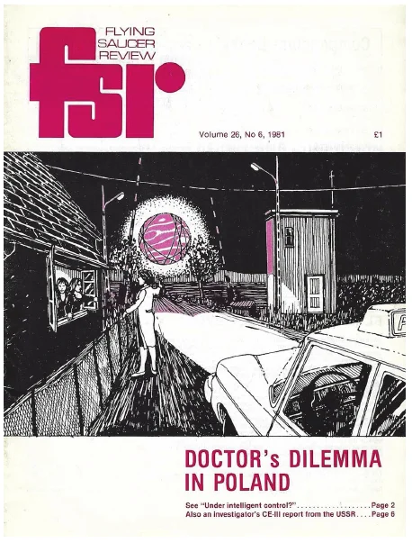
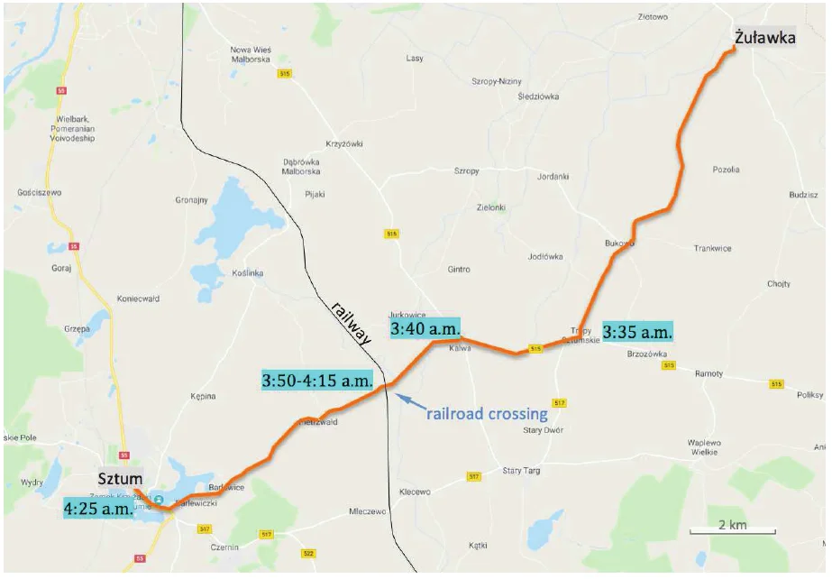
Voilà pour l'enchaînement des événements tel que le rapporte Emma Popik dans son récit pour FSR. Nous avons reçu des informations complémentaires sur l'incident par l'intermédiaire du chercheur britannique Martin Shough. Shough avait trouvé un lien vers un fichier audio de 28 minutes contenant des extraits de l'entretien d'Emma Popik avec le chauffeur de l'ambulance Grzegorz Skoczyński, le brancardier Andrzej Olejnik et la garde-barrière Gabriela Ludorf http://www.emmaPopik.pl/images/3/3b/Ufo_w_Sztumie_-_wywiad_przeprowadza_Emma_Popik.mp3. Un ami de l'auteur a traduit les entretiens du polonais vers le néerlandais (le néerlandais étant la langue maternelle de l'auteur). Outre davantage de détails sur l'événement, le fichier audio nous apprend que des policiers se sont finalement rendus au passage à niveau. En fait, le chauffeur de l'ambulance avait remarqué deux agents en train de parler aux gardes-barrières lorsque l'hôpital l'avait envoyé pour un second appel plus tard dans la matinée.Il ressort de l'entretien que la doctoresse avait appelé le central téléphonique et demandé à la standardiste de contacter non seulement la police mais aussi l'armée, en espérant que l'une des deux dégagerait la route pour l'ambulance.
Alors, qu'était cet objet en forme de boule avec des taches jaune orangé sur sa surface cramoisi foncé
, qui
a suivi quatre personnes dans une ambulance comme s'il leur était relié par une corde
avant de leur barrer la
route ? Pour les enquêteurs expérimentés des phénomènes
célestes bizarres, ces éléments descriptifs évoquent immédiatement quelque chose : une boule de lumière rougeâtre
qui suit un véhicule rappelle fortement la Lune,
proche de l'horizon et qui semble copier les mouvements des observateurs en raison de ce qu'on appelle l'effet
de parallaxe.Quand on regarde par la fenêtre d'un véhicule en mouvement, les objets
lointains restent plus longtemps dans le champ de vision que les objets proches. Un arbre ou un lampadaire en
bordure de route, par exemple, est vite perdu de vue, alors que les obstacles plus éloignés restent visibles plus
longtemps. Cet effet explique pourquoi des corps astronomiques comme la Lune semblent suivre un véhicule en
mouvement, glissant apparemment au-dessus des arbres et des collines, et ralentissant ou accélérant à mesure que le
conducteur réduit ou augmente sa vitesse. Mais quatre adultes, et deux gardes-barrières de plus, peuvent-ils
être trompés par la Lune au point qu'une course urgente en ambulance soit interrompue et qu'on appelle la police à
l'aide ? Pour répondre à cette question, il nous faut d'abord savoir s'il y avait une pleine lune, ou presque, dans
la bonne partie du ciel ce matin de septembre.
Il y a un moment de l'incident pour lequel la ligne de visée vers la boule rougeâtre non identifiée peut être
déterminée avec précision : celui où le chauffeur de l'ambulance s'est arrêté quelques mètres
après le
passage à niveau, puis, craignant un rayonnement de l'objet, a reculé d'environ 200 m jusqu'à un point situé juste
avant le passage. Le récit est précis quant à l'emplacement de ce passage : le passage à niveau entre Kalwa et
Sztum.
Grâce à Google Street
View, il n'a pas été trop difficile de trouver ce lieu (voir figure 3). Ses coordonnées géographiques sont
53°56’27”N et 19°07’18”E. En regardant dans la direction où se trouvait la boule rouge, c'est-à-dire planant
au-dessus de la route devant les témoins, nous avons trouvé que l'azimut de
la boule rouge pour cette phase aurait été exactement de 244°, ce qui signifie que la boule était alors à
l'ouest-sud-ouest.
Nous avons ensuite vérifié si la Lune se trouvait près de cet azimut aux premières heures du . Ce n'était pas le cas… Quand l'ambulance est arrivée au passage à niveau (vers CEST soit GMT), la Lune aurait été à l'est (azimut 85,5° ; élévation 19,5°). Autrement dit, la Lune n'était pas du tout près de l'horizon ouest, et trop haut dans le ciel pour avoir paru rougeâtre du fait de la diffusion atmosphérique des courtes longueurs d'onde. De plus, seuls 17 % du disque lunaire étaient éclairés ce matin-là, lui donnant la forme d'un mince croissant, et non d'une boule.
Fin de l'histoire ? Nous devons admettre que ces résultats négatifs nous ont quelque peu surpris. Après tout, de nombreux éléments du récit d'Emma Popik désignent la Lune comme la coupable évidente. Nous avons donc décidé d'entrer quelques autres dates dans notre logiciel de carte du ciel. Peut-être y avait-il un moment pas trop éloigné où la Lune se trouvait à la bonne position. Nous avons touché le gros lot en tapant « 1979 » au lieu de « 1980 ». En effet, si l'incident s'était produit exactement un an plus tôt, la correspondance serait parfaite ! Ce jour-là, le , à , la Lune était éclairée à 97 % et se trouvait près de l'horizon, à l'azimut 245° (la pleine lune tombait le ).
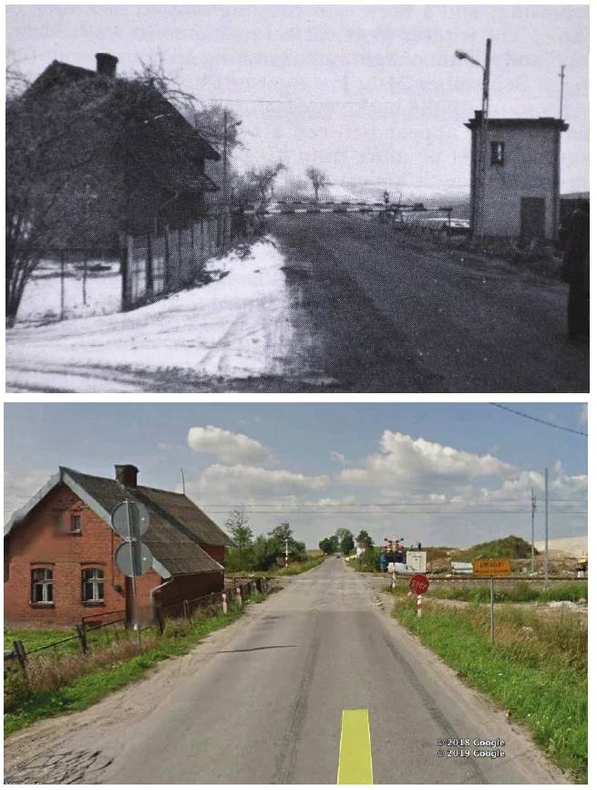
Se pourrait-il que Popik se soit trompée d'année ? Cela semble très improbable, car Popik a déclaré avoir interrogé les témoins deux jours après l'événement. Il est peut-être plus plausible qu'elle n'ait pas mentionné l'année dans son récit, et que ce soit feu Gordon Creighton, alors rédacteur en chef par intérim de FSR, qui ait glissé l'année « 1980 », pensant que l'événement s'était produit peu de temps avant qu'il reçoive le récit, ce qui fut sans doute fin ou début . Pour tenter d'abord de savoir si l'année pouvait être erronée, nous avons cherché sur Internet la date de naissance d'Aneta Pluta, la fille que le témoin Elżbieta Pluta s'apprêtait à mettre au monde moins de trois heures après l'observation. La date de naissance d'Aneta nous aurait indiqué l'année de l'incident. Hélas, la recherche s'est révélée infructueuse.
Nous avons alors commencé à chercher des références polonaises au cas en tapant dans Google des termes de recherche comme « Sztum », « UFO »,
« 5 września 1979 » et « 5 września 1980 » (września signifiant
« septembre » en polonais). Cela nous a rapidement menés à un article en ligne sur un site appelé UFO
Relacje. Son titre : « UFO nad miejscowością Tropy Sztumskie 5 września 1979 » (en
français : « Ovni au-dessus du village de Tropy Sztumskie le 5 septembre 1979 »).L'article se
trouve sur https://ufo-relacje.pl/2018/12/29/ufo-nad-miejscowoscia-tropy-sztumskie-5-wrzesnia-1979/
Le récit que nous y avons trouvé concernait clairement l'incident qui nous intéressait. Une note de bas de page
nous a de plus rassurés en indiquant que le résumé était fondé sur des articles de presse de 1979.
Nous y
voilà donc : la rencontre de Tropy Sztumskie n'a
pas eu lieu en , mais en !
Ayant établi la date et l'heure correctes, nous pouvons maintenant vérifier plus en détail la position de la Lune.
La figure 4 est une image composite de l'aspect qu'aurait eu la Lune à son coucher pour quelqu'un se tenant au
passage à niveau face à l'ouest-sud-ouest le , entre
. Nous savons que l'ambulance est arrivée au passage à niveau vers . À ce
moment, la Lune était à gauche de la chaussée, et descendait jusqu'à atteindre une position juste au-dessus de la
route (azimut 244°) trois minutes plus tard. La rotation de la Terre aurait fait passer lentement la Lune du côté
gauche de la route vers la droite, ce qui concorde avec la déclaration de la doctoresse Piazza selon laquelle il
s'est déplacé lentement vers la droite
(FSR). Selon le chauffeur de
l'ambulance, la boule a été perdue de vue vers 4 h 15
(FSR). À ce
moment-là, se souvient-il, elle a commencé à rétrécir et a disparu sans laisser de trace en 2 ou 3 secondes
(UFO Relacje), ce qui concorde avec ce que nous trouvons dans l'entretien enregistré, à savoir
qu'elle est restée là jusqu'à quatre heures dix ou quatre heures et quart.
De ,
c'est exactement le moment où la Lune a disparu dans la brume et s'est couchée sous l'horizon (à
pour être exact, et non vers 3 h 40
, comme Popik l'a écrit dans FSRNous sommes d'accord avec Gordon Creighton, de FSR, pour dire que la déclaration de Popik la Lune avait décru
, alors
qu'en fait elle était croissante, doit être comprise comme « la Lune s'était couchée ».). Le coucher réel
de la Lune a eu lieu à l'azimut 248°, soit environ 8 diamètres lunaires à droite de la chaussée.
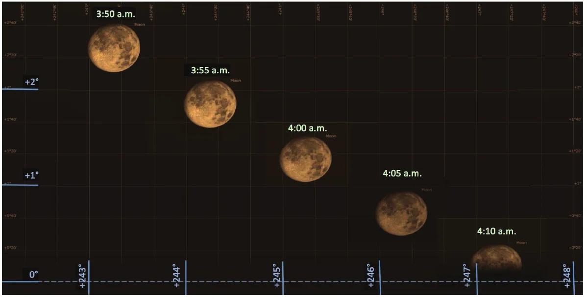
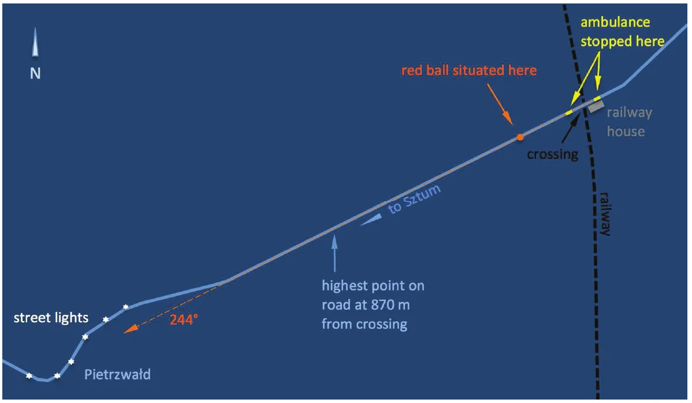
Six témoins qui regardent la Lune pendant environ une demi-heure sans la reconnaître pour ce qu'elle est ? N'est-ce pas tiré par les cheveux ? Eh bien, cette présentation des faits n'est pas tout à fait exacte. Interrogée par Mme Popik dans la maison du passage à niveau deux jours après l'incident, la garde-barrière Gabriela Ludorf a déclaré ceci :
Nous regardions la boule depuis un moment… Nous avions déjà levé les barrières avant l'arrivée de l'ambulance parce qu'une moto voulait traverser. Nous avons refermé la barrière et après ça nous avons vu l'ambulance. J'ai dit à ma collègue de la relever. L'ambulance a franchi la barrière, puis a vite reculé pour se garer juste devant la voie ferrée. Oh là là, ils veulent peut-être demander quelque chose. Il s'est peut-être passé quelque chose ! Alors la barrière s'est relevée. J'ai dit à ma collègue Józia [diminutif de Józefa] :
Qu'est-ce que c'est que cette boule ?Józia a dit :C'est la Lune[rires]. Puis quelqu'un [la doctoresse Piazza] est sorti de l'ambulance et nous a demandé si nous voyions nous aussi cette boule. Elle a alors commencé à parler d'un possible rayonnement. C'est là que mes cheveux se sont dressés sur ma tête. Nous regardions la boule depuis un certain temps avant l'arrivée de l'ambulance, mais nous n'y avions pas trop prêté attention parce que nous pensions que c'était la Lune. Je ne sais pas exactement quand la boule était apparue, mais quand je l'ai vue, elle était au-dessus d'une petite colline dans le champ, à environ 2 m au-dessus d'un poteau. Rouge foncé et plus grosse que la Lune. Pas deux fois plus grosse mais environ une fois et demie la Lune. http://www.emmaPopik.pl/images/3/3b/Ufo_w_Sztumie_-_wywiad_przeprowadza_Emma_Popik.mp3
En résumé : il semble que l'inquiétude des jeunes femmes ait été largement due à l'arrivée de l'ambulance, à sa
marche arrière par-dessus la voie, à la doctoresse qui en sort, s'approche d'elles et pose des questions sur la
boule en évoquant un possible rayonnement. Pas une folie à deux, mais une folie à six, pour ainsi dire. Mais le récit
de Gabriela soulève aussi une autre question : comment les deux gardes-barrières auraient-elles pu regarder la boule
rouge depuis un certain temps avant l'arrivée de l'ambulance
si cette même boule était censée avoir poursuivi
l'ambulance près du village de Tropy, un lieu situé à 5,3 km de la maison du passage à niveau ?!
Popik ne donne aucune indication précise sur la direction dans laquelle l'objet a été vu avant l'arrivée de
l'ambulance au passage à niveau. Tout ce que nous avons, c'est que tandis qu'ils laissaient derrière eux le
village de Kalwa… la boule se trouvait à environ 150 mètres à gauche.
L'article web d'UFO
Relacje le confirme : À , l'ambulance approchait de la route de Sztum, et quand elle a
atteint l'intersection, le chauffeur G. S. a remarqué, sur la gauche, une boule mate rouge foncé.
Le véhicule
était alors sur la route 515 et approchait de l'embranchement vers la « route de Sztum », ce qui implique de
franchir deux carrefours ou « intersections » consécutifs (figure 6). C'est quand l'ambulance approche du premier
carrefour que la boule rouge est vue pour la première fois sur la gauche.
Les témoins se dirigeaient alors vers le nord-ouest (figure 7). Cela s'avère
conforme à la position de la Lune à ce moment-là
(, selon le récit de Popik dans FSR), à savoir
l'ouest-sud-ouest (azimut 241°).
Les actions suivantes sont des accélérations et décélérations de l'ambulance, auxquelles répond l'objet qui la
« suit ». C'est vraisemblablement le moment où le véhicule tournait vers le sud entre les deux carrefours proches de
Kalwa, et où l'objet passait devant les
arbres en décrivant de douces courbes
(FSR). Ce serait la Lune qui
les « suivait » sur leur gauche alors qu'ils se dirigeaient d'abord vers les carrefours près de Kalwa, puis, après
avoir « oscillé » pendant les virages, elle aurait « filé devant » et serait restée à peu près devant eux un moment
avant de « glisser » vers la droite tandis qu'ils se dirigeaient vers le sud-ouest en direction du passage à niveau.
Juste avant le passage à niveau, la route fait un léger virage à droite. De ce fait, la Lune serait apparue de
nouveau sur la gauche avant d'« osciller » juste devant eux et de s'arrêter au-dessus de la route. L'article d'UFO Relacje mentionne : Après Kalwa, la boule a soudain accéléré et a dépassé l'ambulance pour se
suspendre au-dessus de la route.
Tout cela concorde globalement avec la carte et les mouvements relatifs
probables de la Lune, le chauffeur mettant sans le savoir fin à la poursuite en arrêtant la voiture.
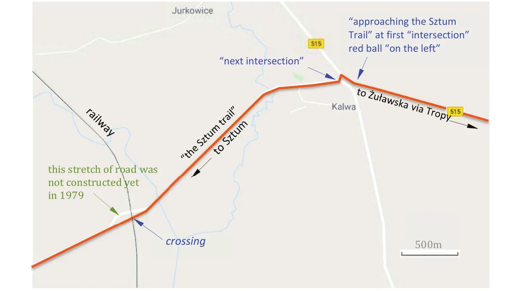
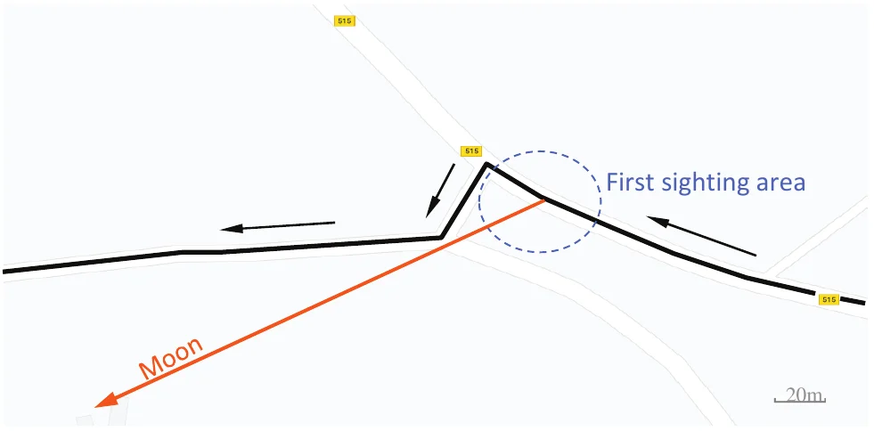
Mais il y a un problème. Il ressort de l'entretien enregistré que lorsque l'ambulance est arrivée à l'intersection
de la route 515 et de la route de Sztum, le chauffeur a estimé que l'objet se trouvait à environ 35° au-dessus de
l'horizon. Popik était parvenue à cet angle d'élévation en demandant à Skoczyński d'imaginer une ligne allant de ses
yeux à l'objet, puis d'estimer l'angle que cette ligne aurait fait avec l'horizon. Bien que cela doive fonctionner
en théorie, les enquêteurs expérimentés savent que cette méthode
ne donne pas de résultat fiable. Popik en était peut-être consciente, car dans son article de FSR elle indique que, lorsque les témoins se sont approchés du double carrefour de Kalwa, ils ont situé l'objet
à un angle d'élévation entre 15° et 20°.
Cela réduit de moitié l'estimation initiale. Mais un problème plus
grave est qu'à , quand l'ambulance est arrivée à Kalwa, la Lune n'était pas à 15, 20 ou 35° au-dessus de
l'horizon, mais seulement à 4°.
La question est de savoir quelle est la fiabilité des chiffres donnés par Popik. Les enquêteurs expérimentés savent que les estimations d'élévation sont presque toujours fausses, et pas de quelques degrés seulement. En fait, une étude (non publiée) réalisée par l'auteur sur 196 cas dans lesquels de prétendus ovnis avaient été formellement identifiés comme des corps astronomiques a confirmé de manière assez spectaculaire que l'élévation d'un objet dans le ciel est presque toujours grossièrement surestimée. Dans 45 cas de cet échantillon, les témoins estimaient que l'angle d'élévation de l'« ovni » observé était compris entre 15° et 25°. Dans 4 d'entre eux, soit 9 %, le phénomène signalé pouvait être attribué à une cause astronomique (étoile, planète, Lune, météore ou ISS) située à moins de 4° au-dessus de l'horizon. Dans 17 cas, soit 38 %, les objets astronomiques pris pour autre chose se sont révélés être à des hauteurs comprises entre 4° et 8°. Dans 71 cas de notre échantillon, l'angle d'élévation estimé était supérieur à 25° mais inférieur ou égal à 40°. Trente de ces cas (soit 42 %) étaient attribuables à une source astronomique située à 10° ou moins. Même si l'échantillon utilisé pour cette étude est petit, il montre bien une nette tendance des observateurs à surestimer largement la hauteur de ce qu'ils ont vu.
Une autre raison de douter de l'exactitude de cet angle d'élévation élevé tient à deux phrases de l'article de
FSR qui citent les témoins comme ayant décrit l'objet comme jamais
vraiment dans le ciel
ou à aucun moment très haut au-dessus du sol.
L'article de Popik mentionne aussi
qu'à un moment l'objet était à hauteur de la cime des arbres
, et dans l'entretien enregistré le vol de la
boule est décrit comme passant devant des arbres et des fermes.
Ces citations suggèrent-elles que la boule
rouge a parfois été vue plus haut dans le ciel ? Pas nécessairement. Les images de Google Street View montrent
que la route 515 entre Tropy et Kalwa offre de larges vues sur des collines basses et des champs (voir figure 8).
Dans ces conditions, situer un objet à hauteur de la cime des arbres
ou passant devant des arbres et des
fermes
n'implique pas un grand angle d'élévation.
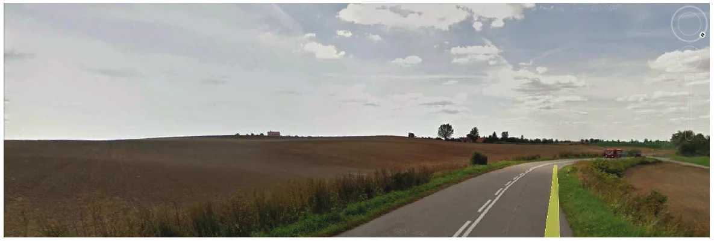
La confirmation que la boule rougeâtre était basse dès le moment où elle a été aperçue est venue lorsque le
chercheur espagnol Manuel Borraz Aymerich a attiré l'attention de
l'auteur sur un article écrit par Stanislaw Barski et publié sur le blog polonais
Paranormal.PL.L'article de Stanislaw Barski se trouve sur https://paranormalpl.wordpress.com/2010/04/22/incydent-sztumski/
Nous étions passés à côté de cette source quand nous avions entrepris de réexaminer le cas. Elle contient pourtant
une déclaration intéressante. Barski ne mentionne pas sa source, mais il cite le chauffeur Skoczyński comme suit :
Il était . Je venais de tourner de Żuławka Sztumska vers la route de Malbork [route 515]. C'est là que
nous avons remarqué, loin devant, une boule rouge foncé de la taille de la Lune qui flottait dans le ciel assez
bas au-dessus de l'horizon.
Cela confirme de façon concluante notre soupçon initial : le phénomène n'a
jamais été observé à une hauteur comprise entre 15 et 20°, et encore moins à 35°.
L'élévation n'est pas contestée pour la phase finale et la plus longue de l'incident. Popik écrit dans FSR que, lorsque l'ambulance est arrivée au passage à niveau, l'objet était
descendu à quelques centimètres au-dessus de la route.
Selon le récit du chauffeur dans l'article de Barski,
il est descendu à une hauteur d'environ 1 m, 1,5 m au plus.
À une hauteur d'environ 2 m
, voilà ce que
mentionne UFO Replacje. Quoi qu'il en soit, il est clair que, pendant cette phase, l'objet était
très bas dans le ciel, près de l'horizon.
Nous avons déjà souligné qu'il y avait une Lune presque pleine la nuit de la rencontre, avec 97 % du disque lunaire
éclairé. Cette phase de la Lune concorde avec la
description d'un objet lumineux en forme de boule. Un extrait de l'entretien enregistré est révélateur à cet égard.
Quand Popik demande au chauffeur de dessiner l'objet (fichier audio), Skoczyński répond : Je ne sais pas trop
comment faire
, sur quoi le brancardier lui dit : Dessine simplement la Lune, c'est ce qui s'en rapproche le
plus.
Des branches d'arbres devant la Lune qui se déplaçait lentement ont pu aisément donner l'impression de beaucoup
de lignes noires
sur la surface montant et descendant irrégulièrement dans tous les sens
(voir figure 9).
L'article de Popik dans FSR indique : Sa lumière jaunâtre brillait
à travers les feuilles
(c'est nous qui soulignons), tandis que dans l'entretien le chauffeur précise
que la boule lumineuse n'avait aucun effet sur les arbres.
Ces deux déclarations suggèrent que l'objet n'était
pas devant, mais derrière les arbres que l'on voit au bout de la route sur les figures 3, 11 et 12. Les zones
sombres et claires typiques de la surface lunaire peuvent en outre expliquer les taches jaune orangé
, la
couleur rouge d'ensemble étant due à la grande épaisseur d'atmosphère entre l'observateur et la Lune basse (plus
d'atmosphère signifie davantage de diffusion de la lumière bleue).
Il y a plusieurs autres détails singuliers dans les descriptions recueillies lors des entretiens menés par Popik.
L'un concerne le chauffeur, qui voyait nettement non seulement la grille de lignes noires irrégulières
, mais
aussi deux bandes horizontales sombres
ou étagères
, en bas et en haut.
Selon l'article d'UFO Replacje, ces « étagères » n'étaient visibles que lorsque la boule était suspendue au-dessus
de la route.
D'épaisses branches, des traînées de condensation d'avions ou des couches de nuages superposées
près de l'horizon (ces dernières illustrées par la figure 10) peuvent expliquer ces deux bandes sombres. Plus
difficile à expliquer est l'affirmation de Mme Pluta selon laquelle elle aurait aussi
remarqué quelque chose comme une antenne
au sommet de la boule, qui lui donnait l'air d'un ballon gonflé
au bout d'un fil
(Barski). Curieusement, aucun des autres témoins n'a mentionné ce détail. S'il a été rapporté
correctement, on pourrait suggérer que cette « antenne » était produite par des lampadaires près de Pietrzwałd éclairant le flanc d'un grand
arbre.
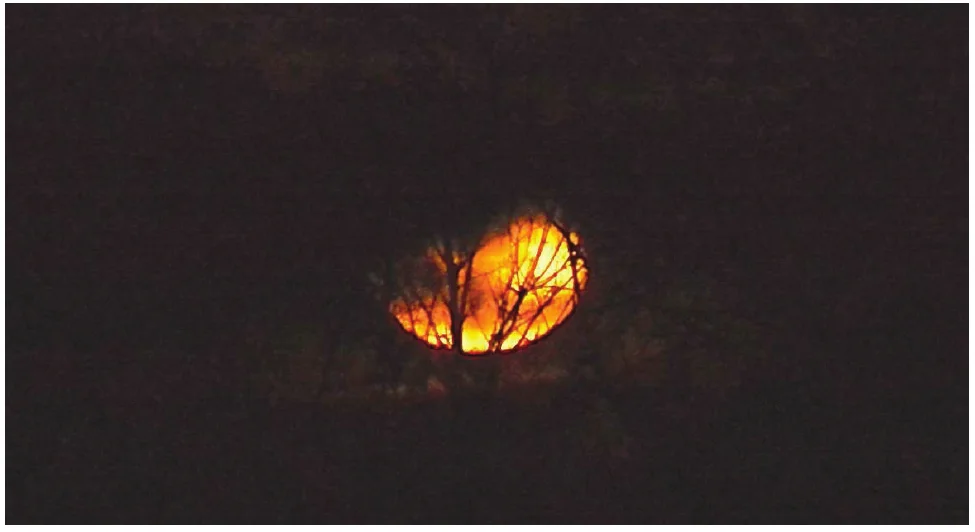
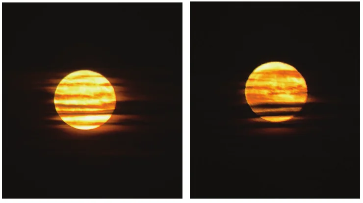
Quant à la taille de la boule, les témoins sont unanimes : l'objet paraissait aussi grand que la Lune
et
se rapprochait sans cesse
(FSR). L'article de Barski nous apprend
que la doctoresse Piazza a enregistré au magnétophone son propre récit de l'incident dès son retour chez elle ce
matin-là. Un extrait de cet enregistrement évoque le moment où le phénomène a été aperçu pour la première fois. Il
est très révélateur. Barki cite la doctoresse comme suit : Sur le chemin du retour, quelques kilomètres après
Żuławka, un nuage rouge est apparu du côté du chauffeur au-dessus de l'horizon. C'était étrange ; on aurait dit le
soleil couchant. J'ai plaisanté avec le chauffeur : “Dites-moi ce que ça pourrait être : le soleil ou la Lune ?
Ça ne peut quand même pas être un ovni.” Le chauffeur a dit que c'était la Lune !
Ce n'est qu'après que
l'objet est devenu plus gros, rouge orangé et nettement délimité
que les témoins ont abandonné l'idée que
l'objet était la Lune.
Il est important de noter ici que beaucoup de gens sont convaincus que la Lune est plus grosse lorsqu'elle est
proche de l'horizon.Cet effet optique est connu sous le nom d'« illusion lunaire ». La raison
pour laquelle les gens ont l'impression que la Lune est plus grosse près de l'horizon a été expliquée de
nombreuses façons, mais les principaux facteurs qui créent l'illusion seraient la présence de points de repère
près de l'horizon (les petites silhouettes de maisons et d'arbres lointains font paraître la Lune grosse), et une
compensation par le cerveau, qui s'attend à ce que les objets passant d'une position haute dans le ciel vers
l'horizon (comme un avion ou un ballon) deviennent plus petits, et non qu'ils conservent la même taille angulaire,
comme le fait la Lune. Dans le même ordre d'idées, les témoins qui ont pris la Lune couchante ou levante
pour un objet non identifié surestiment généralement la taille de ce qu'ils ont vu lorsqu'on leur demande d'en
comparer le diamètre à celui de la Lune. Gabriela Ludorf a décrit la taille apparente de l'objet comme pas deux
fois plus grosse, mais environ une fois et demie la Lune
, ce qui est aussi la façon dont d'autres témoins
abusés ont décrit la Lune couchante ou levante.Voir par exemple l'évaluation par l'auteur de
l'observation belge de Faymonville du , dans laquelle le témoin principal décrivait de même la taille de ce qu'il
croyait être un objet non identifié comme environ 1,5 fois celle de la pleine lune
Vicente-Juan Ballester Olmos and Wim van Utrecht, Belgium in UFO Photographs Vol. 1, UPIAR,
Turin, , p. 101.
Dans le cas de Tropy Sztumskie, nous disposons de chiffres précis. Au passage à niveau, la taille de la boule a été
comparée à la largeur de la chaussée, dont Popik affirme qu'elle faisait 6 mètres de large à cet endroit
(FSR). « À cet endroit » désigne le point de la route où les témoins
croyaient que se trouvait la boule, c'est-à-dire à 200 mètres ou moins
de la voiture après qu'ils eurent
franchi la voie ferrée. Popik indique aussi : les bords de l'ovni dépassaient de la route de chaque côté…
d'environ 50 cm.
À 200 m, une route de 6 mètres de large correspond à une largeur angulaire de 1,7°. Le
diamètre de la Lune ne couvrant qu'environ 0,5° du ciel, cela signifierait que, si l'objet avait été la Lune, il
n'aurait occupé qu'environ un tiers de la route. Alors, qu'est-ce qui ne va pas ?
Comme pour les élévations, on ne peut se fier aux estimations de distance de nuit. Fait intéressant, la route
au-delà des barrières monte à partir du passage à niveau (pente d'environ 0,5°), puis redescend vers le hameau de
Pietrzwałd. Selon Google Earth, le point le plus haut de la route se trouve à 870 m du passage à
niveau (voir figure 5). Comme l'ambulance avait dépassé la voie ferrée de plusieurs mètres
(FSR), nous pouvons arrondir à 800 m. Au-delà de ce point, la route redescend et
n'est plus visible depuis le passage à niveau (voir figure 11). Si c'est la Lune qui a été prise pour un objet
planant au-dessus de la route, c'est logiquement cette « fin » visible de la route que l'on aura crue située juste
sous l'objet. Or, à 800 m, une route de 6 mètres de large sous-tend un angle horizontal de 0,43°. Autrement dit, pour
quelqu'un se tenant près du passage à niveau, la Lune, d'environ 0,50° de diamètre, aurait effectivement paru un
peu plus large que la chaussée.
Dans l'entretien mené par Popik, l'une des gardes-barrières mentionne que l'objet qu'elle et sa collègue avaient
d'abord pris pour la Lune se balançait de
haut en bas.
Le chauffeur, pour sa part, précise qu'il descendait par paliers
, tandis que la doctoresse
affirme qu'après son retour dans la voiture, la boule planait toujours
, mais qu'au bout de 15 minutes elle
a glissé au-dessus de l'arbre et a continué à planer légèrement
(Barski). Popik elle-même écrit dans son récit
que la boule monta la petite colline, plana au sommet, puis revint au bout de quelques secondes
, tandis que la
trajectoire esquissée sur une illustration accompagnant l'article d'UFO Relacje (figure 12) montre
un mouvement descendant suivi d'une chute verticale abrupte, faisant de l'arrivée de la boule une véritable
manœuvre d'atterrissage.
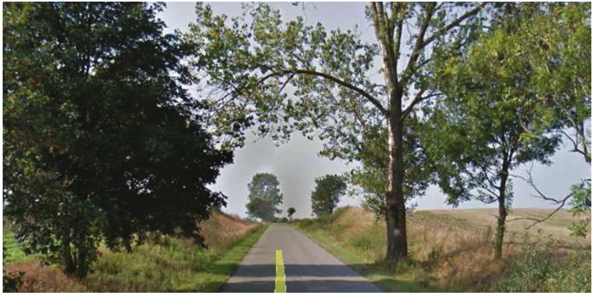
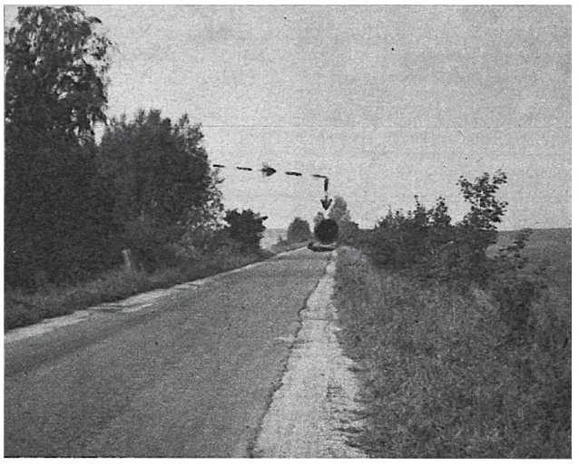
Les mouvements rapportés ci-dessus sont difficiles à concilier avec la descente régulière de la Lune vers la droite. Il est toutefois remarquable que chaque témoin semble décrire un type de mouvement différent. Cela nous amène à nous demander si les mouvements rapportés ne pourraient pas être attribués à des mouvements des témoins eux-mêmes. Monter ou descendre une petite marche, monter ou descendre une côte en voiture, faire quelques pas à gauche ou à droite, en avant ou en arrière : tous ces déplacements ont pu faire changer la position de la Lune par rapport à des objets fixes comme un poteau ou un arbre, exactement comme lorsque la Lune « suivait » l'ambulance. Le fait que les témoins croyaient que l'objet n'était jamais à plus de 500 m, alors qu'il se trouvait en réalité à des centaines de milliers de kilomètres, a pu compliquer encore leur interprétation de ce qui se déroulait devant eux.
Popik mentionne aussi qu'il y avait une lumière blanche sous la boule
, s'étendant à gauche et à
droite
, ainsi qu'un flot de lumière blanche au-delà de l'horizon.
Dans le fichier audio, il est précisé
que les « lumières » (au pluriel !) éclairaient vers le bas et ressemblaient aux phares blancs d'une voiture.
L'article d'UFO Relacje décrit la lumière blanche comme éclairant le sol en dessous d'elle.
Avec des descriptions aussi variées, il est difficile d'établir ce qui a été exactement observé pendant cette phase.
Grâce à Google Street View,
nous avons remarqué qu'il y a plusieurs lampadaires près de Pietrzwałd, à environ 1,5 km du passage à niveau (voir
figure 5). Nous ne pouvons pas être sûrs que ces lampadaires existaient déjà en ,
mais il n'est pas tiré par les cheveux de suggérer que la lueur des réverbères près de ce petit village ait pu être
visible juste au-dessus du point le plus haut de la route, ajoutant ainsi à l'étrangeté de la scène. Une autre
possibilité est que les lumières provenaient d'un véhicule garé de l'autre côté de la colline.
Malgré ces détails singuliers (dont aucun n'est particulièrement étrange ni fondé sur des déclarations de témoins
concordantes), l'explication par la Lune paraît
solide. Apparemment, Popik a bien vérifié si la Lune était visible aux premières heures du (peut-être parce que non seulement le chauffeur, mais aussi les
gardes-barrières et le brancardier avaient d'abord cru regarder la Lune), mais Popik s'en débarrasse vite en
affirmant que la Lune avait décru [sic] à 3 h 40.
Rien n'est plus éloigné de la vérité : même à
, une demi-heure plus tard, la Lune presque pleine était encore dans le ciel et placée exactement
là où se situait l'ovni. En fait, la Lune s'est couchée à , l'heure exacte à laquelle la
mystérieuse boule rouge a disparu, à savoir entre . Pourtant, aucun des témoins n'a mentionné avoir vu la Lune tout près de la boule rouge.
Nous considérons l'incident ovni de Tropy Sztumskie, comme on l'appelle en Pologne, comme l'un des plus beaux exemples de rapport de Lune/IFO. Il n'est cependant pas unique. Dès les années , des sceptiques ovni français ont documenté des dizaines de cas similaires où la Lune s'est avérée être la cause de rencontres d'ovnis, souvent spectaculaires.Voir par exemple : Opération SAROS, CNEGU, ; Les influences de la lune sur la casuistique & l’ufologie, SERPAN, ; ainsi que : Thibaut Alexandre avec Eric Maillot, Des OVNI au clair de lune, Les dossier de S.O. n° 6, . Un long article en français de Maillot sur les méprises avec la Lune peut être lu sur : http://www.unice.fr/zetetique/articles/meprises_lune.html. Plus récemment, le chercheur américain Herb Taylor et l'auteur ont réuni beaucoup d'autres rapports de ce genre, notamment du Benelux et des les dossiers du projet Blue Book de l'USAF.Non publiés, hélas, mais deux de ces cas de Lune/IFO sont discutés dans : Vicente-Juan Ballester Olmos & Wim van Utrecht, Belgium in UFO Photographs Vol. 1, UPIAR, Turin, , notamment pp. 99-113 et 140-151. Pour d'autres rapports de Lune/IFO, voir aussi le site web de Tim Printy : http://www.astronomyufo.com/UFO/MoonUFO.htm
Je remercie Martin Shough d'avoir relu cet article et de m'avoir aidé à cartographier le lieu et la ligne de visée de la première phase de l'observation. Je suis en outre redevable à Manuel Borraz Aymerich de m'avoir signalé l'article de Stanislaw Barski, et à Herb Taylor d'avoir lancé la réouverture de ce cas ancien des archives ovni. Un dernier mot de remerciement va à Monika Zielinska pour une traduction orale de l'entretien enregistré d'Emma Popik de , ainsi qu'à Mieke Tiebos pour son aide dans la réalisation de l'étude sur les angles d'élévation estimés et réels dans les rapports d'ovnis belges.